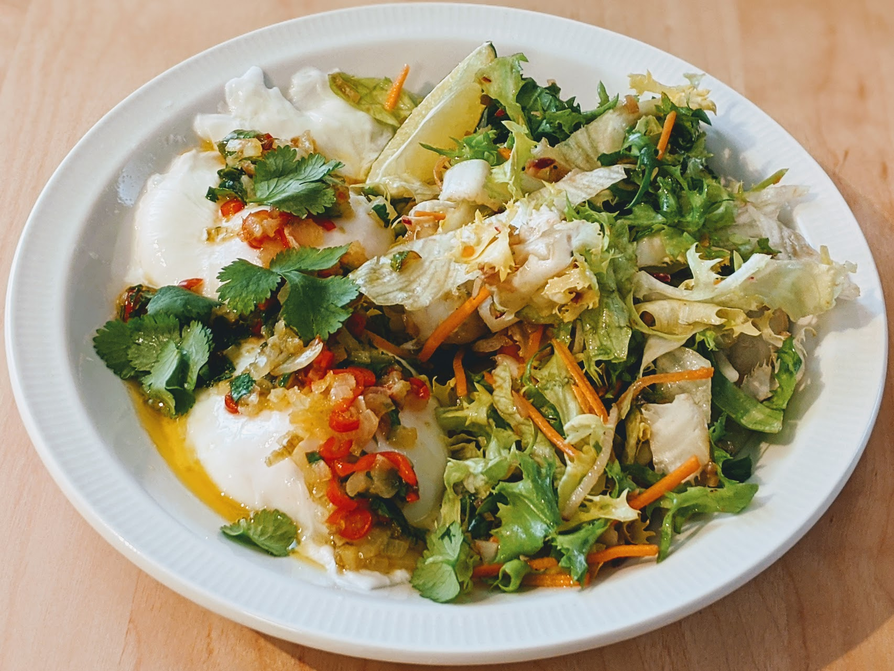

Œufs pochés ensoleillés

Pour deux personnes :
- Quatre œufs
- Un petit piment
- Un oignon frais, ou une échalote
- Une poignée de coriandre fraîche
- Un citron vert bio
- Une cuillère à soupe d'huile d'olive
- Un trait de vinaigre
- Récupérer les feuilles de coriandre, les laver, les couper grossièrement, et les laisser sécher au fond d'une passoire. Laver le citron vert. En couper deux quartiers (pour la décoration), le zester et le presser pour récupérer le jus.
- Éplucher et émincer l'oignon. Le faire revenir doucement dans l'huile d'olive au fond d'une poêle. Laver et émincer le piment, l'ajouter lorsque l'oignon commence à devenir translucide, le laisser à feu doux quelques minutes, puis éteindre le feu. Ajouter le jus et le zeste de citron vert et une bonne partie de la coriandre.
- Pendant ce temps, faire bouillir de l'eau dans une casserole bien large. Lorsque ça bout, éteindre le feu (ou le mettre à feu très doux), ajouter un peu de vinaigre dans l'eau, attendre qu'il n'y ait plus de bulles, et mettre délicatement les œufs dans l'eau chaude pendant 3 minutes, en laissant le plus d'espace possible entre les œufs.
- Retirer les œufs avec une écumoire, les égoutter un peu, et les disposer dans les assiettes en mettant la sauce sur le dessus. Parsemer du reste de coriandre et servir immédiatement, par exemple avec une salade, du bacon grillé, de l'avocat, des toasts…
Note : il faut que la casserole soit assez large pour pouvoir y mettre quatre œufs sans qu'ils ne se touchent, si on a pas de casserole assez grosse, on peut faire ça en deux fois.